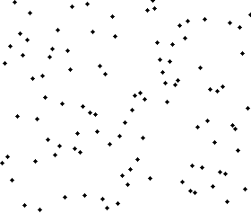
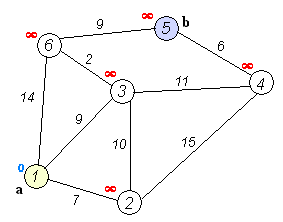

アルゴリズム1：クイックソートアルゴリズム
クイックソートはトニー・ホーアによって開発されたソートアルゴリズムである。平均状況では、n個の項目をソートするのにΟ(n log n)回の比較を要する。最悪状況ではΟ(n²)回の比較が必要だが、この状況は一般的ではない。実際、クイックソートは通常、他のΟ(n log n)アルゴリズムよりも明らかに高速である。なぜならその内部ループ（inner loop）はほとんどのアーキテクチャで非常に効率的に実装できるからである。
クイックソートは分割統治法（Divide and conquer）戦略を用いて、リストを2つのサブリストに分割する。
算法步骤：
1. 数列から要素を一つ選び、それを「基準」（pivot）と呼ぶ。
2. 数列を並べ替え、基準値より小さいすべての要素は基準の前に、基準値より大きいすべての要素は基準の後ろに配置する（同じ値はどちら側でもよい）。この分割が終了すると、基準は数列の中間位置にある。これを分割（partition）操作と呼ぶ。
3. 基準値より小さい要素の部分数列と、基準値より大きい要素の部分数列を再帰的に（recursive）ソートする。
再帰の最も底のケースは、数列のサイズが0または1である場合、つまり常にソート済みである場合です。再帰を続けても、このアルゴリズムは必ず終了します。なぜなら、各イテレーション（反復）において、少なくとも1つの要素を最終的な位置に配置するからです。

アルゴリズム2：ヒープソートアルゴリズム
ヒープソート（Heapsort）は、ヒープというデータ構造を利用して設計されたソートアルゴリズムである。ヒープはほぼ完全二分木の構造であり、同時にヒープの性質を満たす。すなわち、子ノードのキー値またはインデックスは常にその親ノードより小さい（または大きい）。
ヒープソートの平均時間計算量はΟ(n log n)である。
算法步骤：
ヒープH[0..n-1]を作成する
ヒープの先頭（最大値）とヒープの末尾を交換する
3. ヒープのサイズを1縮小し、shift_down(0)を呼び出して、新しい配列の最上位データを対応する位置に調整する。
4. ヒープのサイズが1になるまでステップ2を繰り返す。

アルゴリズム3：マージソート
マージソート（Merge sort、台湾では「合併ソート」とも訳される）は、マージ操作に基づく効率的なソートアルゴリズムである。このアルゴリズムは分割統治法（Divide and Conquer）を採用した非常に典型的な応用である。
算法步骤：
1. 2つのソート済み配列の合計サイズの領域を確保し、その領域にマージ後の配列を格納する。
2. 2つのポインタを設定し、それぞれの初期位置を2つのソート済み配列の先頭位置とする。
3. 2つのポインタが指す要素を比較し、より小さい要素をマージ用領域に配置して、ポインタを次の位置に移動する。
4. いずれかのポインタが配列の末尾に達するまでステップ3を繰り返す。
5. もう一方の数列に残っているすべての要素を直接マージ数列の末尾にコピーする

アルゴリズム4：二分探索アルゴリズム
二分探索アルゴリズムは、ソート済み配列内で特定の要素を探す検索アルゴリズムです。探索過程は配列の中央要素から始まり、中央要素がちょうど探している要素であれば探索過程は終了します。ある特定の要素が中央要素より大きいか小さい場合、配列の中央要素より大きいまたは小さい半分の領域で探索を続け、最初と同じように中央要素から比較を始めます。ある段階で配列が空であれば、見つからないことを意味します。この探索アルゴリズムは、比較のたびに探索範囲を半分に縮小します。折半探索は毎回探索領域を半分に減らすため、時間計算量はΟ(logn)です。
アルゴリズム5：BFPRT（線形探索アルゴリズム）
BFPRTアルゴリズムが解決する問題は非常に古典的であり、すなわちn個の要素からなる配列からk番目に大きい（k番目に小さい）要素を選び出すというものである。巧妙な分析により、BFPRTは最悪の場合でも線形時間計算量を保証できる。このアルゴリズムの考え方はクイックソートの考え方に似ている。もちろん、最悪の場合でもo(n)の時間計算量を達成するために、5人のアルゴリズム作者は巧妙な処理を行った。
算法步骤：
1. n個の要素を5個ずつのグループに分け、n/5（切り上げ）個のグループにする。
2. 各グループの中央値を取り出す。ソート方法は任意でよく、例えば挿入ソート。
3. 再帰的にselectionアルゴリズムを呼び出して、前のステップで得られたすべての中央値の中央値を求め、それをxとする。中央値が偶数個の場合は、中央の小さい方を選ぶものとする。
4. xを用いて配列を分割する。x以下の要素の個数をkとし、xより大きい要素の個数をn-kとする。
5. i==kならばxを返す。i<kならば、xより小さい要素の中からi番目に小さい要素を再帰的に探す。i>kならば、xより大きい要素の中からi-k番目に小さい要素を再帰的に探す。
終了条件：n=1のとき、返されるのはi番目に小さい要素である。
アルゴリズム6：DFS（深さ優先探索）
深さ優先探索アルゴリズム（Depth-First-Search）は、探索アルゴリズムの一種です。これは木の深さに沿ってノードを走査し、可能な限り深く木の分岐を探索します。ノードvのすべての辺が探索されたとき、探索はノードvを発見した辺の始点ノードへ後戻りします。この過程は、始点ノードから到達可能なすべてのノードが発見されるまで続けられます。まだ発見されていないノードが存在する場合は、そのうちの1つを始点ノードとして選択し、上記の過程を繰り返します。全体のプロセスは、すべてのノードが訪問されるまで繰り返されます。DFSは盲目探索に属します。
深さ優先探索はグラフ理論における古典的なアルゴリズムであり、深さ優先探索アルゴリズムを用いて対象グラフの対応するトポロジカルソート表を生成できます。トポロジカルソート表を利用すると、最大経路問題など、多くの関連するグラフ理論の問題を簡単に解決できます。一般に、ヒープデータ構造を用いてDFSアルゴリズムの実装を補助します。
深さ優先走査のグラフアルゴリズムの手順：
1. 頂点vにアクセスする；
2. vの未訪問の隣接点から順に深さ優先探索を行い、グラフ内のvと経路でつながる頂点がすべて訪問されるまで続ける。
3. このときグラフ内にまだ訪問されていない頂点があれば、未訪問の頂点から始めて再度深さ優先探索を行い、グラフ内のすべての頂点が訪問されるまで続ける。
上記の説明はやや抽象的かもしれません。実例を挙げます：
DFSはグラフ内のある開始頂点vを訪問した後、vから出発して、その任意の隣接頂点w1を訪問する。次にw1から出発して、w1に隣接するがまだ訪問していない頂点w2を訪問する。そしてw2から出発して同様の訪問を続け、…このようにして、すべての隣接頂点が訪問済みである頂点uに到達するまで進める。
続いて、一歩戻り、直前に訪問した頂点に退き、他に訪問されていない隣接頂点がないか確認します。あれば、その頂点を訪問し、その後その頂点から出発して前述と同様の訪問を行います。なければ、もう一歩戻って探索を続けます。連結グラフ内のすべての頂点が訪問されるまで、上記の過程を繰り返します。
アルゴリズム7：BFS（幅優先探索）
幅優先探索アルゴリズム（Breadth-First-Search）は、グラフ探索アルゴリズムの一種です。簡単に言うと、BFSはルートノードから始まり、木（グラフ）の幅に沿って木（グラフ）のノードを走査します。すべてのノードが訪問されれば、アルゴリズムは終了します。BFSも同様に盲目探索に属します。一般に、キュー（待ち行列）データ構造を用いてBFSアルゴリズムの実装を補助します。
算法步骤：
1. まずルートノードをキューに入れる。
2. キューから最初のノードを取り出し、それが目的のノードかどうかを調べる。
目標が見つかれば、探索を終了し、結果を返します。
そうでなければ、そのノードのまだ検査していないすべての直接の子ノードをキューに追加する。
3. キューが空ならば、グラフ全体を調べたことになる。つまりグラフ内に探索対象の目標はない。探索を終了し「目標が見つからない」を返す。
4. 手順2を繰り返す。

アルゴリズム8：ダイクストラアルゴリズム
ダイクストラアルゴリズム（Dijkstra's algorithm）は、オランダのコンピュータ科学者エドガー・ダイクストラによって提唱されました。ダイクストラアルゴリズムは幅優先探索を用いて、非負の重みを持つ有向グラフの単一始点最短経路問題を解決し、最終的に最短経路木を得ます。このアルゴリズムは、ルーティングアルゴリズムや、他のグラフアルゴリズムのサブモジュールとしてよく使用されます。
このアルゴリズムの入力は、重み付き有向グラフGと、G内の始点頂点Sを含む。VはG内のすべての頂点の集合を表す。グラフの各辺は、2つの頂点が形成する順序付き要素対である。(u, v)は頂点uからvへの経路があることを表す。EはG内のすべての辺の集合を表し、辺の重みは重み関数w: E → [0, ∞] によって定義される。したがって、w(u, v)は頂点uから頂点vへの非負の重み（weight）である。辺の重みは2つの頂点間の距離と考えることができる。任意の2点間の経路の重みは、その経路上のすべての辺の重みの合計である。V内に頂点sとtがあるとき、Dijkstraアルゴリズムはsからtへの最小重み経路（例えば、最短経路）を見つけることができる。このアルゴリズムはまた、グラフ内で頂点sから他の任意の頂点への最短経路を見つけることもできる。負の重みを含まない有向グラフに対して、Dijkstraアルゴリズムは現在知られている最速の単一始点最短経路アルゴリズムである。
算法步骤：
1. 初期状態ではS={V0}、T={その他の頂点}とし、T内の頂点に対応する距離値を設定する。
<v0,vi>が存在する場合、d(V0,Vi)は<v0,vi>弧上の重みである
<v0,vi>が存在しない場合、d(V0,Vi)は∞である
2. Tの中から距離値が最小である頂点W（Sに含まれない）を選び、Sに加える。
3. 残りのT内の頂点の距離値を修正する：Wを中間頂点として加えた場合、V0からViへの距離値が短縮されるなら、その距離値を修正する。
上記のステップ2、3を、Sにすべての頂点が含まれるまで、すなわちW=Viとなるまで繰り返す。

アルゴリズム9：動的計画法アルゴリズム
動的計画法（Dynamic Programming）は、数学、計算機科学、経済学で使用される、元の問題を比較の単純な部分問題に分解することで複雑な問題を解く方法である。動的計画法は、重複する部分問題と最適部分構造の性質を持つ問題にしばしば適用される。動的計画法による手法は、素朴な解法よりもはるかに時間がかからないことが多い。
動的計画法の背後にある基本的な考え方は非常に単純である。おおまかに言えば、与えられた問題を解くには、その異なる部分（すなわち部分問題）を解き、部分問題の解を統合して元の問題の解を得る必要がある。通常、多くの部分問題は非常によく似ているため、動的計画法は各部分問題を一度だけ解くことで計算量を減らそうとする。ある部分問題の解が一度計算されたら、それをメモ化して保存し、次に同じ部分問題の解が必要になったときに直接参照できるようにする。この方法は、繰り返される部分問題の数が入力の規模に対して指数関数的に増加する場合に特に有用である。
動的計画法に関する最も古典的な問題はナップサック問題である。
算法步骤：
最適部分構造の性質。問題の最適解に含まれる部分問題の解もまた最適であるなら、その問題は最適部分構造の性質を持つ（すなわち最適化原理を満たす）という。最適部分構造の性質は、動的計画法アルゴリズムが問題を解くための重要な手がかりを提供する。
2. 部分問題の重複性。部分問題の重複性とは、再帰アルゴリズムを用いて問題をトップダウンで解く際、毎回生成される部分問題が必ずしも新しい問題ではなく、一部の部分問題が何度も繰り返し計算されることを指します。動的計画法アルゴリズムはまさにこの部分問題の重複性を利用し、各部分問題を一度だけ計算して、その計算結果を表に保存します。すでに計算済みの部分問題を再度計算する必要があるときは、表の中の結果を確認するだけでよく、高い効率を得られます。
アルゴリズム10：単純ベイズ分類アルゴリズム
単純ベイズ分類アルゴリズムは、ベイズの定理に基づく単純な確率分類アルゴリズムです。ベイズ分類の基礎は確率推論であり、さまざまな条件の存在が不確実で、その出現確率のみがわかっている場合に、どのように推論と意思決定のタスクを完了するかということです。確率推論は決定的推論と対応するものです。そして単純ベイズ分類器は独立仮定に基づいています。つまり、サンプルの各特徴は他の特徴と無関係であると仮定します。
ナイーブベイズ分類器は、正確な自然確率モデルに依存し、教師あり学習のサンプル集合において非常に良い分類結果を得ることができる。多くの実際の応用では、ナイーブベイズモデルのパラメータ推定には最尤推定法が用いられる。言い換えれば、ナイーブベイズモデルが機能するのに、ベイズ確率やいかなるベイズモデルも使われていない。
文章来源：www.evget.com